Добро пожаловать на сайт о грибных местах Самары!
Здесь вы найдете информацию о лучших местах для сбора грибов в Самаре и окрестностях.
 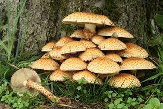
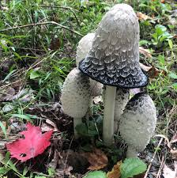
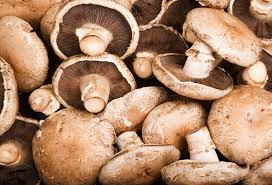
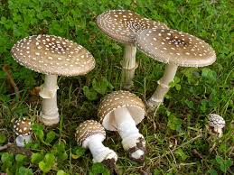
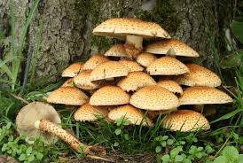
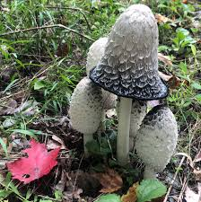
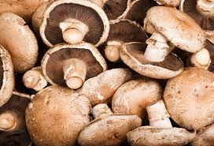
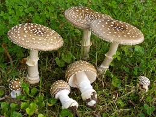
 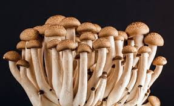
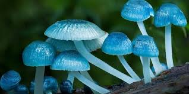
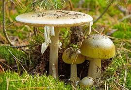
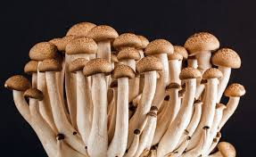
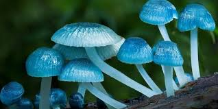
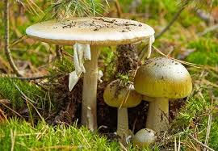
Здесь вы найдете информацию о лучших местах для сбора грибов в Самаре и окрестностях.
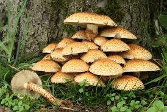
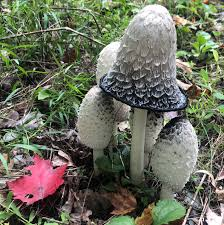
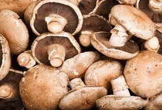
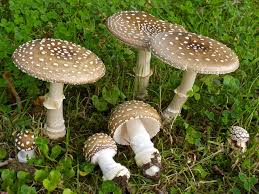
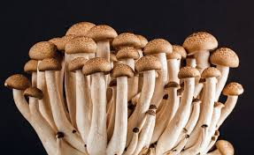
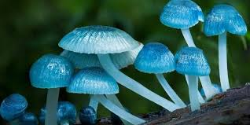
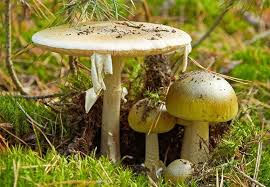